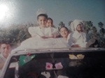
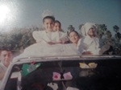

FLORA CAROLINA MORENO CAMACHO


RECIEN NACIDA:
Mi nombre es Flora Carolina Moreno Camacho, nací en Los Mochis Sinaloa el dia 12 de mayo de 1996 a las 2:15 A.M. en el hospital general, actualmente viviendo en la Constancia, el Fuerte.
VARICELA:
Cuando tenía 11 meses me pegó varicela en la cual me tenían que bañar en agua con golondrina,
me daban temperaturas altas de 39° y unas ronchitas de las cuales me quedaron unas marcas
porque me rascaba mucho, se me contagió porque mi hermana mayor se había contagiado en el kínder.

ANIMALITOS:
Yo siempre he tenido un fanatismo por los animalitos, mi papa me cuenta que el agarraba los alacranes,
les quitaba la ponzoña y después me los daba en la mano, cuenta que un día mi mama estando en el comedor
entre yo de afuera con un mata venados en la mano y mi mama se asustó porque lo había agarrado me lo
quitó de la mano y lo mato, y a mí me tuvieron que comprar un jugo porque no me podían quitar el llanto.

BAILE:
Desde pequeña me ha gustado bailar, cuando tenía un año me ponían música y yo bailaba, mis hermanas de vez en cuando me aplaudían y yo me alegraba y bailaba, estando en el kinder participé en bailables como el jarabe tapatío y el ratón baquero, estándo en la primaria también participé en un baile (tabla rítmica) en la que utilizamos unas estrellas azules con las puntas plateadas y las girábamos de tal manera que parecían circulos, fué una experiencia algo agradable, en secundaria también me metí a danza pero como nos sacában de clases para poder ensayar preferí salirme, y como la maestra que instruía danza también era mi maestra en artes quízo reprobarme por haberme salído, pero llamé a mi mamá y ella le preguntó que si porque esa calificación teniendo en mano mi libreta como prueba de que había trabajado teniendo todo al corriente.
 

PRINCESA:
Cuando yo iba en el kínder una de las maestras me eligió para ser la reina de la primavera y mi mama accedió, me vistieron con un vestido blanco
y me pasearon por todo el recorrido de un desfile de mi comunidad.
GRADUACIÓN DEL KINDER:
Entre al kinder en Agosto del año 2000, egresando en Junio del 2002, acudí al kinder "Constitucion de 1917" de aquí en mi ejido, donde aprení las vocales, el abcedario, entre otras cosas.